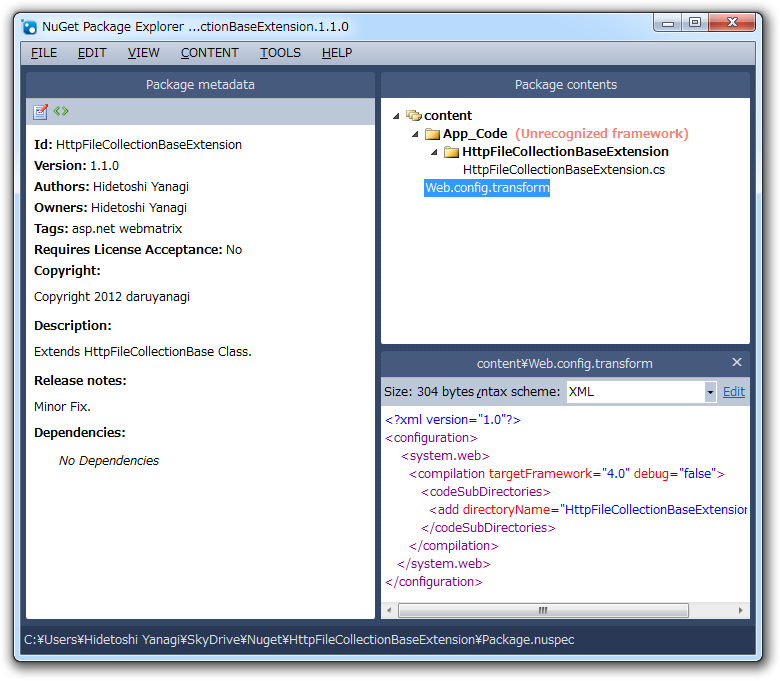
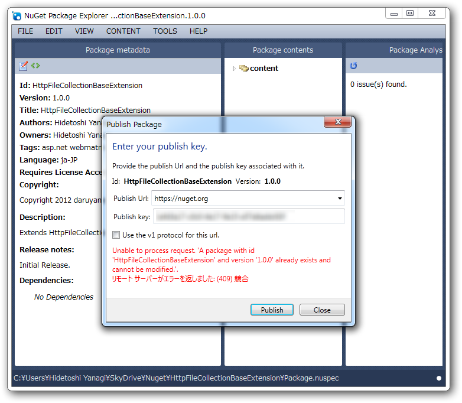

NuGet Package Explorer で NuGet パッケージを作ってみた
執筆日時：

NuGet Package Explorer（http://npe.codeplex.com/）を使ってみたかったので、 WebMatrix でファイルのアップロード（3） - FileUpload ヘルパーを使う - だるろぐ で利用した HttpFileCollectionBase の拡張メソッドを NuGet パッケージにしてみた。 ClickOnce 形式のインストーラーになっていて、セットアップは簡単。やっぱ GUI で編集できるのはいいな。
/ HttpFileCollectionBaseExtension.nuspeccontent/ web.config.transform App_Code/ HttpFileCollectionBaseExtension.cs ReadMe.txt
というフォルダー階層にして .nuspec を開いたら、 <Files> を書いてなくてちゃんと Contentが読み込まれた。なるほど。
別に使い方は難しくないけれど、いくつか躓いたところもある。
まず、メタデータ（.nuspec）を保存するのを忘れやすい。［Save］メニューは .nupack を保存するコマンドなので、 .nuspec を保存するには［Save metadata］メニューを利用する。

あと、公開（push）の終了がわかりづらい。まぁ、重複して公開するとエラーになる（実害はない）のでわかるのだけれど。